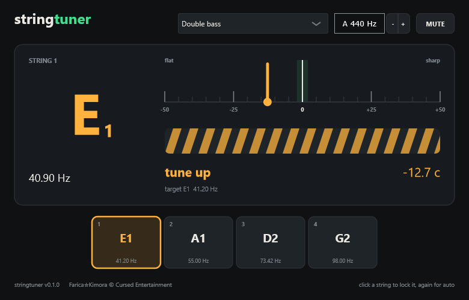

Standalone
- Unzip, run
stringtuner.exe. - Options > Audio/MIDI Settings: ASIO, your interface, the input your instrument is in.
- The input is live from the start; MUTE silences the output.
from the octobass to the violino piccolo
One tuner for every string instrument: C0 (16 Hz) to C8 (4186 Hz), within 0.4 cents.
Pick your instrument and it shows the open strings; play one and the nearest lights up. A needle for the cents, a strobe for the last bit of precision.
free · Windows 10/11 64-bit · VST3 + standalone app (ASIO) · v0.1.0

Uses your microphone; nothing leaves your computer. The plugin hears more precisely (and lower), but this gets you close.
press START and play a string
stringtuner.exe.stringtuner.vst3 to C:\Program Files\Common Files\VST3.The files aren't code-signed, so SmartScreen may warn you. Click More info > Run anyway.